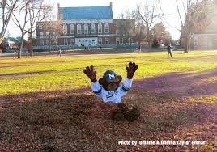
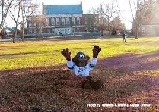

My name is Mason Knutson and I'm from Waterford, Connecticut. I attended my local public school, Waterford High School, from freshman to sophomore year. Then I transfered to a Catholic school, Saint Bernard School, located in Montville Connecticut for the remander of high school. My favorite past time activities include playing baseball, riding horses, working out, going to the beach, and kicking back and enjoying a good blunt with the boys. I am a first generation college student. As of this moment, I attend The University of Maine, my major is Marketing.
Links to: